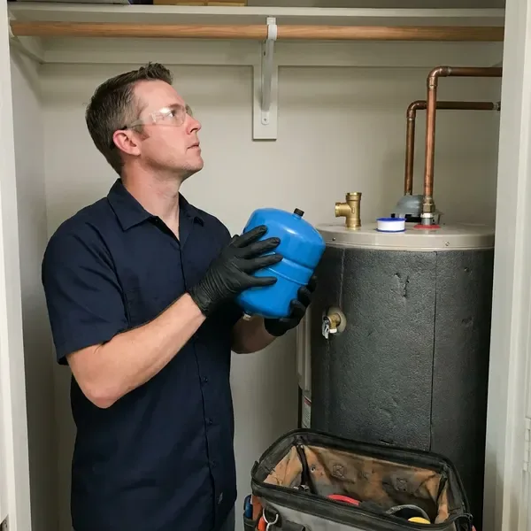

Water Heater Expansion Tank Installation in Macon, GA
Protect your home's plumbing system with professional water heater expansion tank installation in Macon, GA.
- Fast, Reliable Service
- Licensed Local Plumbers
- Upfront Pricing
- Experienced Plumbers

Professional Expansion Tank Installation for Your Home in Macon, GA.
Our licensed plumbers are ready to install your expansion tank safely and efficiently.
Professional Water Heater Expansion Tank Installation in Macon, GA
HGR Plumbing sees a lot of homes with high incoming pressure and pressure regulators that create closed systems. When water heats from about 60 to 120 degrees, it expands and has nowhere to go without an expansion tank. We install the tank securely on the cold supply and confirm the system holds steady through a full heating cycle.
Our expertise includes:
- Air precharge set to match your measured static pressure
- Tank sizing based on heater gallons, pressure and water temperature
- Secure strapping and bracket support on the cold water line

Additional Plumbing Installation Services in Macon, GA
We install water heaters, pumps, lines, and fixtures across Macon, GA with precision workmanship that meets every local code.


Customers
Why Choose HGR Plumbing for Water Heater Expansion Tank Installation in Macon, GA?
Without an expansion tank, the thermal expansion of heated water can create immense pressure, leading to leaks, burst pipes and damage to your water heater itself.
- Measured Pressure, We test static water pressure and set the tank precharge to match it.
- Full System Check, We inspect the PRV and relief valve while we are on site.
- Prevent Leaks, It lowers the risk of leaks and bursts caused by high pressure, saving you from potential water damage.
Citywide Coverage
We install expansion tanks for homes throughout Macon, whether the water heater sits in a garage, a utility closet or an attic. Our trucks carry several tank sizes so we can typically finish on the first visit.
Experienced Team
Our team includes highly trained, licensed plumbers with extensive experience in water heater expansion tank installation. They stay updated on the latest Georgia plumbing codes and best practices.
Safety-First Approach
Thermal expansion can push household pressure past 150 psi, the point where a temperature and pressure relief valve opens. A properly installed expansion tank keeps pressure in a safe range and protects the heater from stress.
Trusted Certified Macon Plumbing Services Professionals
At HGR Plumbing, we take pride in providing certified plumbing services throughout Macon, GA. Backed by leading industry credentials, our experienced plumbers combine technical skill with genuine customer care. Whether it is repair, installation, or maintenance, we follow strict safety and quality standards to deliver long-lasting results you can trust.
Call Us Now PHCC Plumbing Contractor Recognition
PHCC Plumbing Contractor Recognition Better Business Bureau (BBB) Accreditation
Better Business Bureau (BBB) Accreditation Angi Certified Pro
Angi Certified Pro ISO 9001 Quality Management Certification
ISO 9001 Quality Management CertificationReliable Water Heater Expansion Tank Installation Services in Macon, GA
Amtrol Expansion Tank Services in Macon
Amtrol is another respected name in water heater expansion tanks, known for smart design and long-lasting construction. HGR Plumbing offers professional installation of Amtrol expansion tanks throughout Macon, giving homeowners a reliable solution for thermal expansion control. Amtrol tanks feature durable butyl diaphragms and heavy-duty steel shells, engineered for years of trouble-free service. We select the correct size and model to match your water heater's capacity for full system protection.

Commercial and Multi-Unit Expansion Tanks in Macon
Apartment buildings, restaurants and offices with large commercial water heaters or multiple tanks need larger expansion tanks sized for total system volume. We calculate requirements for the entire hot water system, including any storage tanks and recirculation loops. Larger tanks are floor-mounted with proper supports. We schedule work to limit hot water interruption for tenants or customers.
Standard Water Heater Expansion Tank Installation in Macon
Our standard installation service covers traditional tank-style water heaters, with the expansion tank correctly tied into your cold water supply line. We use high-quality, pre-charged diaphragm tanks designed to absorb thermal expansion efficiently. This keeps excessive pressure from building up in your system, which is key for prolonging the life of your water heater and preventing damage to fixtures and appliances. We always test the system carefully after installation to confirm proper performance and compliance with local Macon regulations.
Watts Expansion Tank Installation in Macon, GA
Watts is a leading manufacturer of high-quality plumbing products, including durable water heater expansion tanks. At HGR Plumbing, we often recommend and install Watts expansion tanks because of their proven reliability and performance in Macon, GA homes. These tanks are built to meet strict industry standards and effectively manage thermal expansion, protecting your water heater and entire plumbing system. Our technicians are experienced with Watts products and handle proper installation.
Preventative Expansion Tank Maintenance in Macon, GA
Beyond installation, regular checks and maintenance of your water heater expansion tank help it keep working properly. HGR Plumbing offers preventive maintenance in Macon, GA to inspect your expansion tank's air precharge, check for leaks and confirm proper mounting. This proactive approach helps identify potential issues before they lead to system failures, extending the life of both your tank and your water heater.
Pressure Reducing Valve and Expansion Tank Pairing in Macon
Many homes see high incoming pressure, so pressure reducing valves are widespread. The PRV protects your fixtures but also turns your plumbing into a closed system, which makes an expansion tank necessary. We test the PRV output and replace it if it is creeping or failing. Pairing a healthy PRV with a correctly charged expansion tank gives you steady pressure throughout the house.
Tankless Water Heater Expansion Tank Integration in Macon, GA
While tankless water heaters typically have different pressure dynamics, an expansion tank can still be beneficial or even required in certain setups or by local codes in Macon, GA. We assess your tankless unit and plumbing configuration to determine whether an expansion tank is necessary, especially with higher flow rates or a recirculation pump. Our technicians are experienced with integrating expansion tanks cleanly with many tankless models, keeping them running efficiently and protecting your plumbing system.

Code-Compliant Installations in Macon, GA
Local plumbing codes in Macon, GA often require expansion tanks, particularly when a backflow preventer or pressure reducing valve creates a closed system. Plumbing work in Georgia is licensed at the state level, so it pays to confirm that whoever works on your home holds a current license. HGR Plumbing stays up to date with current regulations and makes sure every expansion tank installation is fully compliant. We obtain any required permits and perform installations that pass inspection, safeguarding your home and avoiding fines or insurance issues. Count on us for installations that meet or exceed all local requirements.
Water Heater Expansion Tank Installation Near Me in Macon, GA
We are proud to be the trusted local plumbing experts for water heater expansion tank installation near me. Our deep understanding of plumbing systems in Macon means quick, efficient and code-compliant service every time.
When you search for 'water heater expansion tank installation near me' in Macon, GA, HGR Plumbing is your reliable local choice. Our team is ready to respond quickly to your plumbing needs across the entire Macon area.
HGR Plumbing at a Glance
- Fully licensed plumbing team covering Macon, GA
- 24/7 emergency service with same-day scheduling
- Clear written estimates, no hidden fees
- 4.9-star rated by 357+ Georgia customers
Macon Map
Macon Information
- Population
- 156,512
- Area codes
- 478/912/229
- Service area
- Macon and communities within 40 miles
- Nearby
- Warner Robins, Stonecrest, Columbus, South Fulton
For homes in Macon, GA, where municipal water systems often include backflow prevention, a water heater expansion tank is essential for managing thermal expansion and protecting your plumbing from undue stress.
Expert Services
Trust our professionals for reliable HGR Plumbing solutions in Macon, GA.
Our Specialized Plumbing Services in Macon, GA
At HGR Plumbing, we provide a complete range of plumbing services across Macon, GA. From leak detection to full system installations, our team ensures fast, precise, and affordable service for both residential and commercial properties. Explore our core services below:


How Our Water Heater Expansion Tank Installation Process Works in Macon, GA
We follow a proven method for every expansion tank installation, delivering a professional, compliant setup for your Macon home.
Request a Quote
Call (770) 470-3778 and tell us about your water heater and any symptoms like a dripping relief valve. We will schedule a visit and give you an honest price.
Test and Size
We measure your static pressure, check the PRV and relief valve, and choose the right tank size. The tank's air charge is adjusted to equal your pressure.
Install and Verify
We install and support the tank on the cold supply, then run the heater through a cycle. Pressure is monitored to confirm the system stays stable.
Frequently Asked Questions About Water Heater Expansion Tank Installation in Macon
Most residential expansion tank installations cost $250 to $550 including the tank and labor. Attic installs, larger tanks or a new pressure reducing valve can bring the total to $600 to $1,000.
Yes, HGR Plumbing stands behind our work. We offer warranties on both the expansion tank itself, per the manufacturer's terms, and our installation labor. Specific warranty details will be provided during your consultation, so you can have confidence in our service.
Manufacturers typically offer one to five year warranties depending on the model. We also warranty our installation labor.
HGR Plumbing installs high-quality expansion tanks from reputable brands like Watts, Amtrol and Zurn. We choose brands known for durability and performance so your system gets the best protection. Our plumbers can recommend the best option for your water heater and plumbing setup.
Yes, expansion tanks need occasional maintenance to keep working correctly. It is recommended to have the air pressure checked annually to match the incoming water pressure. This preventive check helps extend the life of the tank and your water heater.
Most standard water heater expansion tank installations can be completed within 1 to 2 hours. More complex installations, or those requiring significant pipe changes, might take a bit longer. Our plumbers work efficiently to minimize disruption to your home.
Most expansion tanks last 5 to 10 years. Hard water and high pressure can shorten that life, so we check them during water heater service.
A waterlogged tank feels heavy and sounds solid when tapped near the top. Water coming out of the air valve when pressed is a clear sign the bladder has failed.
What People Are Saying About Our Plumbing Experts?

James P.
Our commercial plumbing system had a leak under the sink, and HGR Plumbing handled it professionally. The plumbers arrived quickly and restored everything without disruption to our customers.
Commercial Plumbing · Macon, GA
Emily R.
I called HGR Plumbing for plumbing repair, and the technician was fast, polite, and thorough. They explained the problem clearly and fixed it the same day. I will definitely hire them again. Highly recommended!
Plumbing Repair · South Fulton, GA
Patricia H.
We had a slab leak that two other companies could not find. HGR Plumbing located it in under an hour, explained our options, and the price matched the quote to the dollar.
Slab Leak Repair · Atlanta, GA
Laura S.
I scheduled a water heater replacement, and the team made the process smooth and affordable. The new unit works perfectly, and they cleaned up after completing the job.
Water Heater Replacement · Warner Robins, GARobert G.
The trenchless sewer replacement saved our front yard. They walked us through the camera inspection footage first so we knew exactly what we were paying for.
Sewer Line Replacement · South Fulton, GA
Daniel K.
A pipe burst at 11 pm and they actually answered. The plumber showed up within the hour, shut everything down, and had us back to normal the next morning. Could not ask for more.
Emergency Plumbing · Columbus, GA